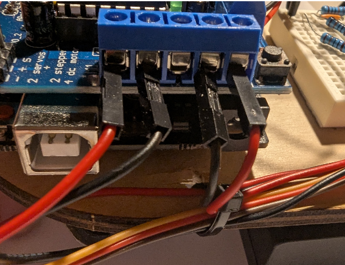

This is the first of two labs on building and programming a robot. Today we introduce DC motors, motor control, and chassis assembly. By the end of this session you'll drive a trajectory you designed.
Safety & Important Tips (~1 minute read)
- Unpower your circuit when making any change.
- Double-check your wiring before plugging in.
- When soldering, check for bridges between pads.
- Many components are cheap/fragile — use them only as instructed.
Assemble a robotic car without sensors and give basic driving commands. Your instructors will provide the following:
- Laser cut robotic chassis (x1)
- Motors + mount (x2)
- Arduino + motor shield (x1)
- Arduino mount (x1)
- Ultrasound + bracket (x1)
- Caster wheel + bracket (x1)
- Fasteners
Software: Arduino IDE
Hardware (machines you might use):
- Soldering Iron
- Small screwdrivers
- Multimeter
We are using the L293D motor shield (Adafruit style). It supports 4 DC motors (or 2 steppers) and 2 servos. The AFMotor library simplifies control so we don't manage low-level PWM and pins manually.
- Download Motor Library: In the Arduino IDE click the library manager (books icon) and
install
"Adafruit Motor Shield library".
Initialize the library at the top of your sketch (above setup()):
#include <AFMotor.h>Create motor objects for the two motors (above setup()):
AF_DCMotor rightMotor(1); // Motor connected to M1
AF_DCMotor leftMotor(2); // Motor connected to M2Set motor speed in setup() (0-255):
void setup() {
rightMotor.setSpeed(255);
leftMotor.setSpeed(255);
}Set initial motor direction in setup():
void setup() {
rightMotor.setSpeed(255);
leftMotor.setSpeed(255);
rightMotor.run(FORWARD);
leftMotor.run(FORWARD);
}Hardware note: Plug the motor shield into the Arduino, aligning all pins. Insert the two yellow TT motors into M1 and M2. If motors spin the wrong way, swap the wires or reverse direction in code.
Upload the code. It should drive motors forward, but speed will be low if powered from USB. We'll connect a battery next.
Now alter your code (exercise): drive forward 3s, stop 1s, backward 3s, repeat (use loop()).
Checkoff 1: Ask your instructor to verify Part 1. Demonstrate forward, stop, and backward motions.
Make sure you have the following pieces before starting (images show orientation):
- Laser cut chassis (x1)
- Motor + mount (x2)
- Arduino + motor shield (x1)
- Arduino mount (x1)
- Caster wheel + bracket (x2)
- M2x12 (servo screws)
- M3x10 (motor mount screws)
- M3x25 / M3x30 (motor screws)
Follow this assembly order (do not skip steps):
- Attach the ball caster to its mount using the small pointy screws, then fasten the mount to the chassis using M3x8 (x2).
- Attach the Arduino (without shield) to its mount and to the chassis using M3x16 (x3). Then add the motor shield on top.
- Use small screws to attach the servo to the front of the chassis. The hole is offset to align the servo axis with the midline.
- Attach the motor mounts to the chassis with M3x10 (x4). Insert an M3 nut into each hex slot first.
- Use M3x25 (x2) to mount the motors to their brackets.
- Attach the battery pack to the bottom of the chassis with double-sided tape (switch faces down).
- Insert the mini breadboard and attach the ultrasound sensor bracket to the servo as shown.
- Add wheels. Push them on fully, but be careful not to snap the motor mounts. Now plug the motors and battery into the Arduino shield carefully:
- Feed the servo wire through the rear hole and connect to shield (yellow = signal, brown = GND).
- Feed motor wires into screw terminals: M1 = left motor, M2 = right motor.
- Attach power cables, being careful not to swap polarity.
Congrats — you have built a robot.
Checkoff 2: Ask your instructor for verification of Part 2. Batteries provided after checkoff.